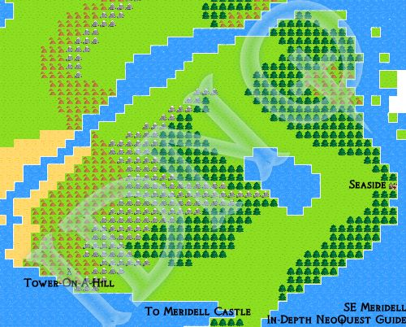

NeoQuest II Maps
Helping you find your way around NeoQuest II...
Meridell | Terror Mountain | Lost Desert | Haunted Woods | Faerieland
| South East Meridell  Visit Seaside for inn and upgrades, and head towards the castle. | |
|

Available maps for this act:
- Meridell Overall Map: Meridell - All Landmasses.
- Trestin Village: Trestin Village, where it all starts. You must leave home to become a hero.
- Western Plains: Western Plains (major zone). Walk around. Fight a bit. Head to the cave, and after that, across the land bridge to the East.
- Dark Cave / Gold Mine: The Miner Foreman is the leader of the undead. Nice training area.
- Northern Marches: Talk to the NPCs (and buy a sword) in White River City, and then go on to the cave for the next adventure.
- White River City: A wizard called Zombom raised the white water bridge. Find and defeat Zombom to lower it. (Lots of upgrades to be bought here)
- Undeground Cave: Follow the puddles.
- Lost Island: I trust you don't need a map to find your way around.
- Mysterious Tower, Level 1: Up the stairs you go...
- Mysterious Tower, Level 2: Lots of tables...
- Mysterious Tower, Level 3: Those statues are suspicious...
- Mysterious Tower, Level 4: Face Zombom...
- Southern Meridell: The Eye of Meridell to the left, The Desert to the right. Eye first, desert later.
- Town of Lakeside: Good upgrades (bring gold), Hermit tells the secret word.
- Lost City of Phorofor: Both NPCs are a waste of time (unless you're seriously low on potions). 404
- Tower on The Hill (Level 2): Teleporter from Phorofor leads you here.
- Tower on The Hill (Level 1): Closer to the exit you are... keep going.
- South East Meridell: Visit Seaside for inn and upgrades, and head towards the castle.
- Village of Seaside: Talk to Uthyni first, and recieve a discount on Uthare's potions
- Plains of Retreat + Castle of Meridell: Fight Ramtor in the castle, then follow him to his tower for the final showdown.
- Meridell Castle: Fight Ramtor. One of the guards at the entrance acts as an inn after you defeat Ramtor.
- Ramtor's Tower: Base Level: Base level. To get on the other side, use Dungeon 1.
- Ramtor's Tower: Dungeon 1: You start at the lower stairs leading up, get to the upper ones.
- Ramtor's Tower: Dungeon 2: You can also talk to Skarl...
- Ramtor's Tower: Tower: Fight Ramtor. The Double Demonic Grarrls here are annoying.